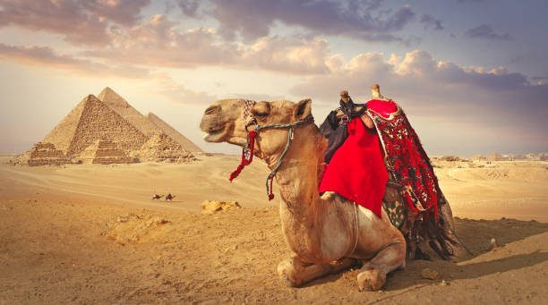
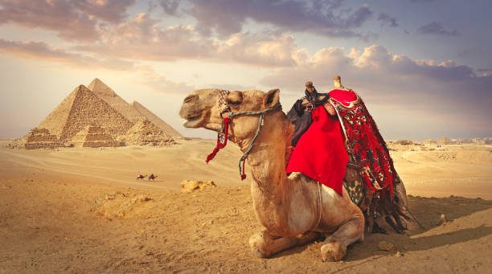

egyptian pyramids
Built during a time when Egypt was one of the richest and most powerful civilizations in the world, the pyramids—especially the Great Pyramids of Giza—are some of the most magnificent man-made structures in history. Their massive scale reflects the unique role that the pharaoh, or king, played in ancient Egyptian society. Though pyramids were built from the beginning of the Old Kingdom to the close of the Ptolemaic period in the fourth century A.D., the peak of pyramid building began with the late third dynasty and continued until roughly the sixth (c. 2325 B.C.). More than 4,000 years later, the Egyptian pyramids still retain much of their majesty, providing a glimpse into the country’s rich and glorious past.
the early pyramids
From the beginning of the Dynastic Era (2950 B.C.), royal tombs were carved into rock and covered with flat-roofed rectangular structures known as “mastabas,” which were precursors to the pyramids. The oldest known pyramid in Egypt was built around 2630 B.C. at Saqqara, for the third dynasty’s King Djoser. Known as the Step Pyramid, it began as a traditional mastaba but grew into something much more ambitious. As the story goes, the pyramid’s architect was Imhotep, a priest and healer who some 1,400 years later would be deified as the patron saint of scribes and physicians. Over the course of Djoser’s nearly 20-year reign, pyramid builders assembled six stepped layers of stone (as opposed to mud-brick, like most earlier tombs) that eventually reached a height of 204 feet (62 meters); it was the tallest building of its time. The Step Pyramid was surrounded by a complex of courtyards, temples and shrines where Djoser could enjoy his afterlife.After Djoser, the stepped pyramid became the norm for royal burials, although none of those planned by his dynastic successors were completed (probably due to their relatively short reigns). The earliest tomb constructed as a “true” (smooth-sided, not stepped) pyramid was the Red Pyramid at Dahshur, one of three burial structures built for the first king of the fourth dynasty, Sneferu (2613-2589 B.C.) It was named for the color of the limestone blocks used to construct the pyramid’s core.
 

chinese wall
Great Wall of China, Chinese (Pinyin) Wanli Changcheng or (Wade-Giles romanization) Wan-li Ch’ang-ch’eng (“10,000-Li Long Wall”), extensive bulwark erected in ancient China, one of the largest building-construction projects ever undertaken. The Great Wall actually consists of numerous walls—many of them parallel to each other—built over some two millennia across northern China and southern Mongolia. The most extensive and best-preserved version of the wall dates from the Ming dynasty (1368–1644) and runs for some 5,500 miles (8,850 km) east to west from Mount Hu near Dandong, southeastern Liaoning province, to Jiayu Pass west of Jiuquan, northwestern Gansu province. This wall often traces the crestlines of hills and mountains as it snakes across the Chinese countryside, and about one-fourth of its length consists solely of natural barriers such as rivers and mountain ridges. Nearly all of the rest (about 70 percent of the total length) is actual constructed wall, with the small remaining stretches constituting ditches or moats. Although lengthy sections of the wall are now in ruins or have disappeared completely, it is still one of the more remarkable structures on Earth. The Great Wall was designated a UNESCO World Heritage site in 1987. Explore China's iconic cultural monument the Great Wall of China Explore China's iconic cultural monument the Great Wall of ChinaSee all videos for this article Shanhaiguan Shanhaiguan Large parts of the fortification system date from the 7th through the 4th century BCE. In the 3rd century BCE Shihuangdi (Qin Shihuang), the first emperor of a united China (under the Qin dynasty), connected a number of existing defensive walls into a single system. Traditionally, the eastern terminus of the wall was considered to be Shanhai Pass (Shanhaiguan) in eastern Hebei province along the coast of the Bo Hai (Gulf of Chihli), and the wall’s length—without its branches and other secondary sections—was thought to extend for some 4,160 miles (6,700 km). However, government-sponsored investigations that began in the 1990s revealed sections of wall in Liaoning, and aerial and satellite surveillance eventually proved that this wall stretched continuously through much of the province. The greater total length of the Ming wall was announced in 2009.
history of construction
The Great Wall developed from the disparate border fortifications and castles of individual Chinese kingdoms. For several centuries these kingdoms probably were as concerned with protection from their near neighbours as they were with the threat of barbarian invasions or raids.
pisa
Pisa, city, central Italy, in the Toscana (Tuscany) regione. The city lies on the alluvial plain of the Arno River, about 6 miles (10 km) from the Ligurian Sea and 50 miles (80 km) west of Florence. Pisa lay by the sea until the 15th century, by which time accumulated silt deposited by the Arno River had completely cut the city off from the receding shoreline. Pisa, Italy Pisa, Italy Ancient Pisa, or Pisae, was possibly inhabited by the Ligurians before passing under Roman control as a naval base. It became a Roman colony shortly after 180 BCE and by 313 CE had become a Christian bishopric. Pisa survived the collapse of the Roman Empire to remain the principal urban centre of Tuscany. Exploiting its sea power and the products and markets of its fertile Tuscan hinterland, the city revived in the 11th century to become a flourishing commercial centre. With the help of Genoa, it also took the initiative against Muslim raiders. In 1016 the Pisans and Genoese drove the Saracens from Sardinia, and in 1063 the Pisan fleet sacked Muslim Palermo. The city’s participation in the Crusades secured valuable commercial positions for Pisan traders in Syria, and thereafter Pisa grew in strength to rival Genoa and Venice. In the 13th century, Pisa, a Ghibelline city, enjoyed the support of the German emperors in its long conflicts with Genoa at sea and with its Tuscan rivals, Lucca and Florence, on land. These struggles culminated in Pisa’s defeat by the Genoese fleet at the decisive Battle of Meloria in 1284. Perito Moreno glacier, Patagonia, Argentina. BRITANNICA QUIZ World Geography: Fact or Fiction? Is there a coast of Paraguay? Does Pisa have more than one leaning tower? Could there be oases in Antarctica? Find out if it’s geographic fact or fiction. Pisa: baptistery Pisa: baptistery Pisa, Italy: baptistery and cathedral Pisa, Italy: baptistery and cathedral Pisa, Italy: cathedral and baptistery Pisa, Italy: cathedral and baptistery Despite this defeat, Pisa became a busy centre of woolen manufacturing late in the 13th century and remained the chief port of Tuscany. Pisan prosperity was reflected in the characteristic casatorre, a tall inhabited tower usually built of brick and stone, and in the city’s churches, particularly the grandiose and spectacular group of cathedral, baptistery, and campanile (the leaning tower). The cathedral and the baptistery were decorated by a succession of distinguished sculptors, including Guglielmo Pisano, Bonanno Pisano, Nicola Pisano, and Nicola’s son Giovanni Pisano.
ancient times
The most believed hypothesis is that the origin of the name Pisa comes from Etruscan and mean 'mouth', as Pisa is at the mouth of the Arno river. Although throughout history there have been several uncertainties about the origin of the city of Pisa, excavations made in the 1980s and 1990s found numerous archaeological remains, including the fifth century BC tomb of an Etruscan prince, proving the Etruscan origin of the city, and its role as a maritime city, showing that it also maintained trade relations with other Mediterranean civilizations. Ancient Roman authors referred to Pisa as an old city. Virgil, in his Aeneid, states that Pisa was already a great center by the times described; the settlers from the Alpheus coast have been credited with the founding of the city in the 'Etruscan lands'. The Virgilian commentator Servius wrote that the Teuti founded the town 13 centuries before the start of the common era. The maritime role of Pisa should have been already prominent if the ancient authorities ascribed to it the invention of the naval ram. Pisa took advantage of being the only port along the western coast between Genoa (then a small village) and Ostia. Pisa served as a base for Roman naval expeditions against Ligurians and Gauls. In 180 BC, it became a Roman colony under Roman law, as Portus Pisanus. In 89 BC, Portus Pisanus became a municipium. Emperor Augustus fortified the colony into an important port and changed the name to Colonia Iulia obsequens. Pisa supposedly was founded on the shore, but due to the alluvial sediments from the Arno and the Serchio, whose mouth lies about 11 km (7 mi) north of the Arno's, the shore moved west. Strabo states that the city was 4.0 km (2.5 mi) away from the coast. Currently, it is located 9.7 km (6 mi) from the coast. However, it was a maritime city, with ships sailing up the Arno. In the 90s AD, a baths complex was built in the city.
statue of liberty
The Statue of Liberty (Liberty Enlightening the World; French: La Liberté éclairant le monde) is a colossal neoclassical sculpture on Liberty Island in New York Harbor in New York City, in the United States. The copper statue, a gift from the people of France to the people of the United States, was designed by French sculptor Frédéric Auguste Bartholdi and its metal framework was built by Gustave Eiffel. The statue was dedicated on October 28, 1886. The statue is a figure of Libertas, a robed Roman liberty goddess. She holds a torch above her head with her right hand, and in her left hand carries a tabula ansata inscribed JULY IV MDCCLXXVI (July 4, 1776 in Roman numerals), the date of the U.S. Declaration of Independence. A broken shackle and chain lie at her feet as she walks forward, commemorating the recent national abolition of slavery. After its dedication, the statue became an icon of freedom and of the United States, seen as a symbol of welcome to immigrants arriving by sea. Bartholdi was inspired by a French law professor and politician, Édouard René de Laboulaye, who is said to have commented in 1865 that any monument raised to U.S. independence would properly be a joint project of the French and American peoples. The Franco-Prussian War delayed progress until 1875, when Laboulaye proposed that the French finance the statue and the United States provide the site and build the pedestal. Bartholdi completed the head and the torch-bearing arm before the statue was fully designed, and these pieces were exhibited for publicity at international expositions. The torch-bearing arm was displayed at the Centennial Exposition in Philadelphia in 1876, and in Madison Square Park in Manhattan from 1876 to 1882. Fundraising proved difficult, especially for the Americans, and by 1885 work on the pedestal was threatened by lack of funds. Publisher Joseph Pulitzer, of the New York World, started a drive for donations to finish the project and attracted more than 120,000 contributors, most of whom gave less than a dollar (equivalent to $30 in 2021). The statue was built in France, shipped overseas in crates, and assembled on the completed pedestal on what was then called Bedloe's Island. The statue's completion was marked by New York's first ticker-tape parade and a dedication ceremony presided over by President Grover Cleveland. The statue was administered by the United States Lighthouse Board until 1901 and then by the Department of War; since 1933 it has been maintained by the National Park Service as part of the Statue of Liberty National Monument, and is a major tourist attraction. Public access to the balcony around the torch has been barred since 1916.
design
The foundation of Bartholdi's statue was to be laid inside Fort Wood, a disused army base on Bedloe's Island constructed between 1807 and 1811. Since 1823, it had rarely been used, though during the Civil War, it had served as a recruiting station. The fortifications of the structure were in the shape of an eleven-point star. The statue's foundation and pedestal were aligned so that it would face southeast, greeting ships entering the harbor from the Atlantic Ocean. In 1881, the New York committee commissioned Richard Morris Hunt to design the pedestal. Within months, Hunt submitted a detailed plan, indicating that he expected construction to take about nine months. He proposed a pedestal 114 feet (35 m) in height; faced with money problems, the committee reduced that to 89 feet (27 m). Hunt's pedestal design contains elements of classical architecture, including Doric portals, as well as some elements influenced by Aztec architecture. The large mass is fragmented with architectural detail, in order to focus attention on the statue. In form, it is a truncated pyramid, 62 feet (19 m) square at the base and 39.4 feet (12.0 m) at the top. The four sides are identical in appearance. Above the door on each side, there are ten disks upon which Bartholdi proposed to place the coats of arms of the states (between 1876 and 1889, there were 38 of them), although this was not done. Above that, a balcony was placed on each side, framed by pillars. Bartholdi placed an observation platform near the top of the pedestal, above which the statue itself rises. According to author Louis Auchincloss, the pedestal "craggily evokes the power of an ancient Europe over which rises the dominating figure of the Statue of Liberty". The committee hired former army General Charles Pomeroy Stone to oversee the construction work. Construction on the 15-foot-deep (4.6 m) foundation began in 1883, and the pedestal's cornerstone was laid in 1884. In Hunt's original conception, the pedestal was to have been made of solid granite. Financial concerns again forced him to revise his plans; the final design called for poured concrete walls, up to 20 feet (6.1 m) thick, faced with granite blocks. This Stony Creek granite came from the Beattie Quarry in Branford, Connecticut. The concrete mass was the largest poured to that time. Norwegian immigrant civil engineer Joachim Goschen Giæver designed the structural framework for the Statue of Liberty. His work involved design computations, detailed fabrication and construction drawings, and oversight of construction. In completing his engineering for the statue's frame, Giæver worked from drawings and sketches produced by Gustave Eiffel.


taj mahal
The Taj Mahal (/ˌtɑːdʒ məˈhɑːl, ˌtɑːʒ-/; lit. 'Crown of the Palace'), is an Islamic ivory-white marble mausoleum on the right bank of the river Yamuna in the Indian city of Agra. It was commissioned in 1631 by the Mughal emperor Shah Jahan (r. 1628–1658) to house the tomb of his favourite wife, Mumtaz Mahal; it also houses the tomb of Shah Jahan himself. The tomb is the centrepiece of a 17-hectare (42-acre) complex, which includes a mosque and a guest house, and is set in formal gardens bounded on three sides by a crenellated wall. Construction of the mausoleum was essentially completed in 1643, but work continued on other phases of the project for another 10 years. The Taj Mahal complex is believed to have been completed in its entirety in 1653 at a cost estimated at the time to be around ₹32 million, which in 2020 would be approximately ₹70 billion (about US $1 billion). The construction project employed some 20,000 artisans under the guidance of a board of architects led by the court architect to the emperor, Ustad Ahmad Lahauri. Various types of symbolism have been employed in the Taj to reflect natural beauty and divinity. The Taj Mahal was designated as a UNESCO World Heritage Site in 1983 for being "the jewel of Muslim art in India and one of the universally admired masterpieces of the world's heritage". It is regarded by many as the best example of Mughal architecture and a symbol of India's rich history. The Taj Mahal attracts more than 6 million visitors a year and in 2007, it was declared a winner of the New 7 Wonders of the World (2000–2007) initiative.
construction
The Taj Mahal is built on a parcel of land to the south of the walled city of Agra. Shah Jahan presented Maharajah Jai Singh with a large palace in the centre of Agra in exchange for the land. An area of roughly 1.2 hectares (3 acres) was excavated, filled with dirt to reduce seepage, and levelled at 50 metres (160 ft) above riverbank. In the tomb area, wells were dug and filled with stone and rubble to form the footings of the tomb. Instead of lashed bamboo, workmen constructed a colossal brick scaffold that mirrored the tomb. The scaffold was so enormous that foremen estimated it would take years to dismantle. The Taj Mahal was constructed using materials from all over India and Asia. It is believed over 1,000 elephants were used to transport building materials. It took the efforts of 22,000 labourers, painters, embroidery artists and stonecutters to shape the Taj Mahal. The translucent white marble was brought from Makrana, Rajasthan, the jasper from Punjab, jade and crystal from China. The turquoise was from Tibet and the Lapis lazuli from Afghanistan, while the sapphire came from Sri Lanka and the carnelian from Arabia. In all, twenty-eight types of precious and semi-precious stones were inlaid into the white marble.[citation needed] According to the legend, Shah Jahan decreed that anyone could keep the bricks taken from the scaffold, and thus it was dismantled by peasants overnight. A 15-kilometre (9.3 mi) tamped-earth ramp was built to transport marble and materials to the construction site and teams of twenty or thirty oxen pulled the blocks on specially constructed wagons. An elaborate post-and-beam pulley system was used to raise the blocks into desired position. Water was drawn from the river by a series of purs, an animal-powered rope and bucket mechanism, into a large storage tank and raised to a large distribution tank. It was passed into three subsidiary tanks, from which it was piped to the complex.[citation needed] The plinth and tomb took roughly 12 years to complete. The remaining parts of the complex took an additional 10 years and were completed in order of minarets, mosque and jawab, and gateway. Since the complex was built in stages, discrepancies exist in completion dates due to differing opinions on "completion". Construction of the mausoleum itself was essentially completed by 1643 while work on the outlying buildings continued for years. Estimates of the cost of construction vary due to difficulties in estimating costs across time. The total cost at the time has been estimated to be about ₹ 32 million, which is around ₹ 52.8 billion ($827 million US) based on 2015 values.